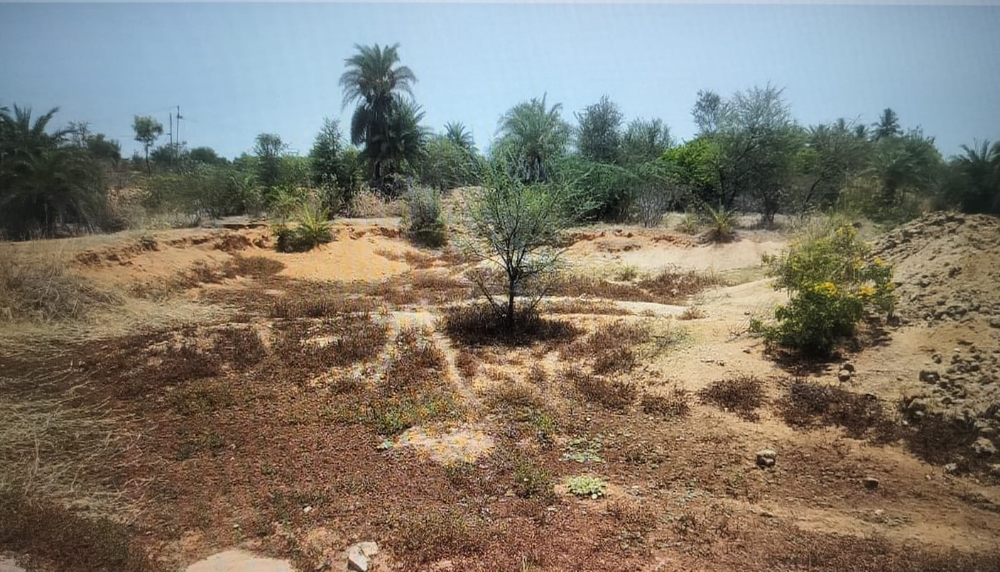
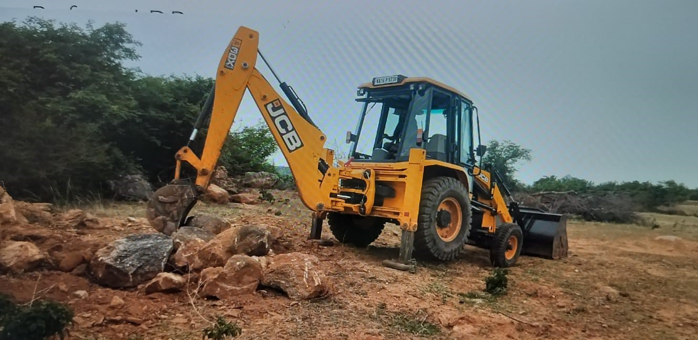

Environmental Regeneration


Soil Conservation Development 2023
Soil conservation stands as a linchpin in our ecological renewal strategy, recognizing the pivotal role that soil health plays in sustaining ecosystems and supporting agricultural activities. Among the key measures employed is stone bunding, an ancient yet highly effective practice involving the construction of low walls or barriers using stones. These structures act as physical impediments to water runoff, preventing soil erosion and allowing rainwater to percolate into the ground. The result is not only the preservation of precious topsoil but also the recharge of groundwater, contributing to the overall health of the local hydrological cycle.
Complementing stone bunding, pebble bunding represents a nuanced approach to soil conservation. By utilizing pebbles or small rocks, this technique creates porous barriers that slow down water flow, facilitating sedimentation and preventing the displacement of fertile topsoil. The arrangement of pebbles optimizes water infiltration, fostering a conducive environment for plant growth and supporting sustainable agricultural practices. Earthen bunding, another integral facet of our soil conservation strategy, involves the construction of low embankments using locally available soil. These structures function as barriers to water movement, effectively reducing surface runoff and curbing soil erosion. Simultaneously, earthen bunds aid in moisture retention, creating microenvironments conducive to plant growth and enhancing the overall fertility of the soil.
Tank Tilt Application Development 2023
The utilization of tank silt stands as a transformative practice aimed at enhancing water percolation and promoting soil conservation. Tanks, integral components of water management systems, accumulate silt over time, often viewed as a byproduct. However, recognizing the untapped potential of this resource, our focus shifts towards actively applying tank silt as a strategic intervention for optimizing water penetration in the soil and fostering sustainable soil conservation practices.
Tanks, traditionally designed for water storage, naturally accumulate silt as a consequence of sedimentation over the years. Rather than considering this accumulated silt as a mere waste product, our approach embraces it as a valuable asset with multifaceted benefits for the ecosystem. By harnessing the nutrient-rich composition of tank silt, we embark on a journey to actively enhance water percolation and fortify soil health.
The application of tank silt serves as a dual-purpose strategy, addressing both water management and soil conservation needs. As silt is spread across agricultural lands, it acts as a natural amendment to the soil, enhancing its structure and fertility. The fine particles in the silt facilitate improved water retention and drainage, creating an optimal environment for plant growth. This, in turn, mitigates the risks of soil erosion, as the enhanced soil structure becomes more resistant to the forces of water runoff.